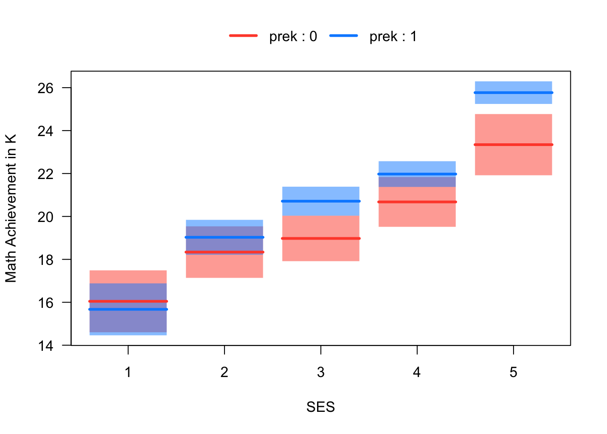

6.8 Exercises
These exercises provide an overview of how to add interactions using the lm function, how to center continuous predictors, and how to follow-up significant interactions with the emmeans package.
6.8.1 Binary + continuous + interaction
There are multiple ways of implementing interactions in R.
We can “hard code” new variables into our data (e.g., the product of a binary gender variable and reading)
We can use R’s formula notation for single term interactions (
:)We can use R’s formula notation for factorial interactions (
*)
The following three models illustrate how to use these three approaches, and show that they all producing the same output. In general, the * syntax is the easiest to use, so we will stick with that one going forward. The variables used in the example are from the NELS data:
achmat12is Mat Achievement (percent correct on a mat test) in grade 12.achrdg12is Reading Achievement (percent correct on a reading test) in grade 12.genderis dichotomous encoding of gender with valuesMaleandFemale(it is not a binary variable, but a factor, as discussed in Section ??).
load("NELS.RData")
attach(NELS)
# Interaction via hard coding
genderXreading <- (as.numeric(gender) - 1) * achrdg12
mod1 <- lm(achmat12 ~ achrdg12 + gender + genderXreading)
summary(mod1)##
## Call:
## lm(formula = achmat12 ~ achrdg12 + gender + genderXreading)
##
## Residuals:
## Min 1Q Median 3Q Max
## -19.058 -3.786 0.501 4.077 16.289
##
## Coefficients:
## Estimate Std. Error t value Pr(>|t|)
## (Intercept) 14.8031 2.6492 5.59 3.8e-08 ***
## achrdg12 0.7282 0.0470 15.49 < 2e-16 ***
## genderMale 13.3933 3.6583 3.66 0.00028 ***
## genderXreading -0.1779 0.0651 -2.73 0.00652 **
## ---
## Signif. codes: 0 '***' 0.001 '**' 0.01 '*' 0.05 '.' 0.1 ' ' 1
##
## Residual standard error: 5.8 on 496 degrees of freedom
## Multiple R-squared: 0.462, Adjusted R-squared: 0.459
## F-statistic: 142 on 3 and 496 DF, p-value: <2e-16# Interaction via `:` operator
mod2 <- lm(achmat12 ~ achrdg12 + gender + achrdg12:gender)
summary(mod2)##
## Call:
## lm(formula = achmat12 ~ achrdg12 + gender + achrdg12:gender)
##
## Residuals:
## Min 1Q Median 3Q Max
## -19.058 -3.786 0.501 4.077 16.289
##
## Coefficients:
## Estimate Std. Error t value Pr(>|t|)
## (Intercept) 14.8031 2.6492 5.59 3.8e-08 ***
## achrdg12 0.7282 0.0470 15.49 < 2e-16 ***
## genderMale 13.3933 3.6583 3.66 0.00028 ***
## achrdg12:genderMale -0.1779 0.0651 -2.73 0.00652 **
## ---
## Signif. codes: 0 '***' 0.001 '**' 0.01 '*' 0.05 '.' 0.1 ' ' 1
##
## Residual standard error: 5.8 on 496 degrees of freedom
## Multiple R-squared: 0.462, Adjusted R-squared: 0.459
## F-statistic: 142 on 3 and 496 DF, p-value: <2e-16##
## Call:
## lm(formula = achmat12 ~ achrdg12 * gender)
##
## Residuals:
## Min 1Q Median 3Q Max
## -19.058 -3.786 0.501 4.077 16.289
##
## Coefficients:
## Estimate Std. Error t value Pr(>|t|)
## (Intercept) 14.8031 2.6492 5.59 3.8e-08 ***
## achrdg12 0.7282 0.0470 15.49 < 2e-16 ***
## genderMale 13.3933 3.6583 3.66 0.00028 ***
## achrdg12:genderMale -0.1779 0.0651 -2.73 0.00652 **
## ---
## Signif. codes: 0 '***' 0.001 '**' 0.01 '*' 0.05 '.' 0.1 ' ' 1
##
## Residual standard error: 5.8 on 496 degrees of freedom
## Multiple R-squared: 0.462, Adjusted R-squared: 0.459
## F-statistic: 142 on 3 and 496 DF, p-value: <2e-16Before moving on, check your interpretation of the coefficients in the models. In particular, what does the regression coefficient on the interaction term mean?
6.8.2 Centering continuous predictors
As noted in Section 6.3, the regression coefficient on Gender is not very interpretable when the interaction in the model, because it now corresponds to the gender gap when achrdg12 = 0. We can fix this issue by re-scaling achrdg12 so that zero has a meaningful value. One easy and widely used approach is to center achrdg12 at its mean, or, stated otherwise, to work with the deviation scores achrdg12 instead of the “raw” score. Let’s see what happens
# Re-run the model with reading centered at its mean
achrdg12_dev <- achrdg12 - mean(achrdg12)
mod4 <- lm(achmat12 ~ achrdg12_dev*gender)
summary(mod4)##
## Call:
## lm(formula = achmat12 ~ achrdg12_dev * gender)
##
## Residuals:
## Min 1Q Median 3Q Max
## -19.058 -3.786 0.501 4.077 16.289
##
## Coefficients:
## Estimate Std. Error t value Pr(>|t|)
## (Intercept) 55.2944 0.3513 157.41 < 2e-16 ***
## achrdg12_dev 0.7282 0.0470 15.49 < 2e-16 ***
## genderMale 3.4993 0.5214 6.71 5.3e-11 ***
## achrdg12_dev:genderMale -0.1779 0.0651 -2.73 0.0065 **
## ---
## Signif. codes: 0 '***' 0.001 '**' 0.01 '*' 0.05 '.' 0.1 ' ' 1
##
## Residual standard error: 5.8 on 496 degrees of freedom
## Multiple R-squared: 0.462, Adjusted R-squared: 0.459
## F-statistic: 142 on 3 and 496 DF, p-value: <2e-16Note that the intercept and the regression coefficient on gender have changed values compared to mod3. What is the interpretation of these coefficients in the new model?
Next, let’s plot our model with the interaction term. One advantage of having everything in a single model is that we can level-up our plotting! The following code uses the visreg package. Note that the error bands in the plot are produced using the standard errors from emmeans, which is discussed in the following section. We
# Install the package if you haven't already done so
# install.packages("visreg")
# Load the package into memory
library(visreg)
visreg(mod3, xvar = "achrdg12", by = "gender", overlay = TRUE)
If you want to know more about how visreg works, type help(visreg).
6.8.3 Breaking down a significant interaction
If an interaction is significant, then we usually want to report a bit more information about how the focal relationship changes as a function of the moderators. There are two main ways to do this:
Marginal effects (aka marginal means, least squares means, adjusted means): This approach is used when the focal predictor is categorical and we want to compare means across the categories, as a function of the moderator.
Simple trends (aka simple slopes): This approach is used when the focal predictor is continuous and we want to examine the slopes of the simple trends as a function of the moderator.
Usually, the researcher will chose one or the other approach, whichever is best suited to address the research questions of interest. Our example was motivated by consideration of the gender gap in STEM (i.e., the relationship between a STEM and a categorical predictor), so the marginal effects approach is better suited. We will also illustrate simple trends, just to show how that approach works.
6.8.4 Marginal effects
Let’s break the interaction by asking how the relationship between Math and Gender (i.e., the gender achievement gap in Math) changes as a function of Reading. This can be done using emmeans package, and the main function in that pacakge is also called emmeans.
The three main arguments for the emmeans function:
object– the output oflm. This is the first argumentspecs– which factors(s) in the model we want the means ofby– which other predictors break the means down by
We can use emmeans to compute the marginal effect at the mean (MEM) as follows:
# Install the package if you haven't already done so
# install.packages("emmeans")
# Load the package into memory
library(emmeans)
# Use the emmeans function to get the gender means on math, broken down by reading
gap <- emmeans(mod3, specs = "gender", by = "achrdg12")
summary(gap)## achrdg12 = 55.6:
## gender emmean SE df lower.CL upper.CL
## Female 55.3 0.351 496 54.6 56.0
## Male 58.8 0.385 496 58.0 59.5
##
## Confidence level used: 0.95## achrdg12 = 55.6:
## contrast estimate SE df t.ratio p.value
## Female - Male -3.5 0.521 496 -6.712 <.0001In the above output, we only get one Gender difference in Math, and that is computed for the value of achrdg12 = 55.60188, which is the mean values of Reading. As noted, this is called the marginal effect at the mean (MEM).
It is often more helpful to report Gender difference for multiple different values of achrdg12, which is called MERV (marginal effects at representative values). While there are many ways to do chose the values, one convenient approach approach is to use the quartiles of achrdg12. This is accomplished using the cov.reduce argument of emmeans as follows.
# Use the the covarate reduce option of emmeans with the quantile function
gap_quartiles <- emmeans(mod3, specs = "gender", by = "achrdg12", cov.reduce = quantile)
summary(gap_quartiles)## achrdg12 = 31.8:
## gender emmean SE df lower.CL upper.CL
## Female 37.9 1.186 496 35.6 40.3
## Male 45.7 1.129 496 43.5 47.9
##
## achrdg12 = 51.2:
## gender emmean SE df lower.CL upper.CL
## Female 52.1 0.412 496 51.3 52.9
## Male 56.4 0.426 496 55.6 57.2
##
## achrdg12 = 57.0:
## gender emmean SE df lower.CL upper.CL
## Female 56.3 0.355 496 55.6 57.0
## Male 59.6 0.393 496 58.8 60.3
##
## achrdg12 = 61.7:
## gender emmean SE df lower.CL upper.CL
## Female 59.8 0.447 496 58.9 60.6
## Male 62.2 0.482 496 61.2 63.1
##
## achrdg12 = 68.1:
## gender emmean SE df lower.CL upper.CL
## Female 64.4 0.674 496 63.1 65.7
## Male 65.7 0.693 496 64.3 67.0
##
## Confidence level used: 0.95# Test whether the gender difference in math achievement is significant at each quartile of reading achievement
contrast(gap_quartiles, method = "pairwise")## achrdg12 = 31.8:
## contrast estimate SE df t.ratio p.value
## Female - Male -7.74 1.637 496 -4.728 <.0001
##
## achrdg12 = 51.2:
## contrast estimate SE df t.ratio p.value
## Female - Male -4.27 0.593 496 -7.207 <.0001
##
## achrdg12 = 57.0:
## contrast estimate SE df t.ratio p.value
## Female - Male -3.25 0.529 496 -6.138 <.0001
##
## achrdg12 = 61.7:
## contrast estimate SE df t.ratio p.value
## Female - Male -2.41 0.658 496 -3.659 0.0003
##
## achrdg12 = 68.1:
## contrast estimate SE df t.ratio p.value
## Female - Male -1.28 0.967 496 -1.321 0.1872At this point, you should be able to summarize your conclusions about the gender gap in Math and how it depends on Reading.
6.8.5 Simple trends
Next we will show how to use emtrends to test the conditional or “simple” slopes of Math on Reading, given Gender. As mentioned, this approach is not very well suited to the example, but we are going through it here just to illustrate how to do this type of analysis.
The three main arguments for emtrends are
object– the output oflm. This is the first argumentvar– which continuous predictor in the model we want the slopes ofspecs– which factor predictor(s) in the model to break the trend down by
Let’s see how it works.
# Use the emtrends function to get the regression coefficients on reading, broken down by gender
simple_slopes <- emtrends(mod3, var = "achrdg12", specs = "gender")
summary(simple_slopes)## gender achrdg12.trend SE df lower.CL upper.CL
## Female 0.728 0.0470 496 0.636 0.821
## Male 0.550 0.0451 496 0.462 0.639
##
## Confidence level used: 0.95## gender achrdg12.trend SE df t.ratio p.value
## Female 0.728 0.0470 496 15.487 <.0001
## Male 0.550 0.0451 496 12.208 <.0001The foregoing analysis tells us how the relationship between reading and math changes as a function of gender, and, in particular, whether the simple slopes are significant for males and females.
6.8.6 Two continuous predictors
Interactions with continuous predictors are basically the same as for continuous and categorical. One main issue is that we should always center the predictors, not only to facilitate interpretation of the regression coefficients, but also to reduce the correlation between the main effects and the interaction.
For an example, let’s replace gender with SES from our previous analysis. Apologies that this new example is mainly for convenience and doesn’t represent a great research question about, e.g., about why the relationships between math and reading might change as a function of SES!
Here we will focus on how centering affects the results of a regression with interactions among continuous predictors.
##
## Call:
## lm(formula = achmat12 ~ achrdg12 + gender + genderXreading)
##
## Residuals:
## Min 1Q Median 3Q Max
## -19.058 -3.786 0.501 4.077 16.289
##
## Coefficients:
## Estimate Std. Error t value Pr(>|t|)
## (Intercept) 14.8031 2.6492 5.59 3.8e-08 ***
## achrdg12 0.7282 0.0470 15.49 < 2e-16 ***
## genderMale 13.3933 3.6583 3.66 0.00028 ***
## genderXreading -0.1779 0.0651 -2.73 0.00652 **
## ---
## Signif. codes: 0 '***' 0.001 '**' 0.01 '*' 0.05 '.' 0.1 ' ' 1
##
## Residual standard error: 5.8 on 496 degrees of freedom
## Multiple R-squared: 0.462, Adjusted R-squared: 0.459
## F-statistic: 142 on 3 and 496 DF, p-value: <2e-16# With centering
achrdg12_dev <- achrdg12 - mean(achrdg12)
ses_dev <- ses - mean(ses)
mod6 <- lm(achmat12 ~ achrdg12_dev*ses_dev)
summary(mod2)##
## Call:
## lm(formula = achmat12 ~ achrdg12 + gender + achrdg12:gender)
##
## Residuals:
## Min 1Q Median 3Q Max
## -19.058 -3.786 0.501 4.077 16.289
##
## Coefficients:
## Estimate Std. Error t value Pr(>|t|)
## (Intercept) 14.8031 2.6492 5.59 3.8e-08 ***
## achrdg12 0.7282 0.0470 15.49 < 2e-16 ***
## genderMale 13.3933 3.6583 3.66 0.00028 ***
## achrdg12:genderMale -0.1779 0.0651 -2.73 0.00652 **
## ---
## Signif. codes: 0 '***' 0.001 '**' 0.01 '*' 0.05 '.' 0.1 ' ' 1
##
## Residual standard error: 5.8 on 496 degrees of freedom
## Multiple R-squared: 0.462, Adjusted R-squared: 0.459
## F-statistic: 142 on 3 and 496 DF, p-value: <2e-16We can see that, while both models account for the same overall variation in math, SES is significant in the centered model. This has to do both with changing the interpretation of the coefficient (it now represents the relationship between math and reading for students with average reading) and because it is no longer so highly redundant with the interaction term.
Although the interaction with SES was not significant in either model, let’s break down the interaction with emtrends just to see how it works. This time we will use the at option rather than the ’cov.reduce` option to break down the interaction.
# Break down interaction with SES as moderator
simple_slopes <-emtrends(mod5, var = "achrdg12", specs = "ses", at = list(ses = c(9, 19, 28)))
summary(simple_slopes)## ses achrdg12.trend SE df lower.CL upper.CL
## 9 0.550 0.0583 496 0.435 0.665
## 19 0.593 0.0365 496 0.521 0.664
## 28 0.631 0.0639 496 0.506 0.757
##
## Confidence level used: 0.95Finally let’s summarize our (non significant) interaction with a nice plot. Note that visreg breaks the interaction down at the 10th, 50th, and 90th percentile of the by variable. You can overwrite the defaults using the breaks argument (see help(visreg)).
# Note that band = F removes the confidence intervals
visreg(mod5, xvar = "achrdg12", by = "ses", overlay = TRUE, band = F)
6.8.7 Two categorical predictors
For this topic we will switch over to the ECLS data and examine how SES and Pre-K attendance interact to predict Math Achievement at the beginning of Kindergarten. The variables we will examine are
- Math Achievement at the beginning of K (
c1rmscal). This is the number of correct questions on a test with approximately 70 items. - Whether the child attended Pre-K (
p1center). This is a binary variable that indicates pre-K attendance. - SES, coded as quintiles (
wksesq5). We will denote this variable as SES, but keep in mind it is quintiles in this example (e.g., SES = 1 are the respondents with SES between the minimum and the first quintile).
The regression model is as follows. Note that both variables need to be converted to factors in R, so that R will treat them as categorical variables. Also recall that in R the default contrast coding for categorical predictors is reference-group coding.
load("ECLS2577.Rdata")
ecls$prek <- factor(2 - ecls$p1center)
ecls$wksesq5 <- factor(ecls$wksesq5)
mod <- lm(c1rmscal ~ prek*wksesq5, data = ecls)
summary(mod)##
## Call:
## lm(formula = c1rmscal ~ prek * wksesq5, data = ecls)
##
## Residuals:
## Min 1Q Median 3Q Max
## -16.768 -4.768 -0.975 3.955 31.232
##
## Coefficients:
## Estimate Std. Error t value Pr(>|t|)
## (Intercept) 16.045 0.735 21.82 < 2e-16 ***
## prek1 -0.373 0.960 -0.39 0.6973
## wksesq52 2.293 0.957 2.40 0.0166 *
## wksesq53 2.930 0.913 3.21 0.0013 **
## wksesq54 4.631 0.944 4.91 9.9e-07 ***
## wksesq55 7.299 1.034 7.06 2.2e-12 ***
## prek1:wksesq52 1.064 1.212 0.88 0.3801
## prek1:wksesq53 2.109 1.154 1.83 0.0679 .
## prek1:wksesq54 1.671 1.168 1.43 0.1527
## prek1:wksesq55 2.797 1.234 2.27 0.0235 *
## ---
## Signif. codes: 0 '***' 0.001 '**' 0.01 '*' 0.05 '.' 0.1 ' ' 1
##
## Residual standard error: 6.9 on 2567 degrees of freedom
## Multiple R-squared: 0.162, Adjusted R-squared: 0.159
## F-statistic: 55.2 on 9 and 2567 DF, p-value: <2e-16To facilitate interpretation of the ouput, you can refer to the plot below. Each regression coefficient in the output corresponds to a feature of this plot.
visreg::visreg(mod, xvar = "wksesq5", by = "prek",
partial = F, rug = F, overlay = T,
strip.names = T, xlab = "SES",
ylab = "Math Achievement in K")
In order to summarize the model as an ANOVA table, we can use the following code. Note that the ANOVA output tests the variance explained (i.e., R-squared) of the original variables, and does not include dummy variables.
## Analysis of Variance Table
##
## Response: c1rmscal
## Df Sum Sq Mean Sq F value Pr(>F)
## prek 1 3434 3434 72.14 <2e-16 ***
## wksesq5 4 19914 4978 104.58 <2e-16 ***
## prek:wksesq5 4 299 75 1.57 0.18
## Residuals 2567 122198 48
## ---
## Signif. codes: 0 '***' 0.001 '**' 0.01 '*' 0.05 '.' 0.1 ' ' 1